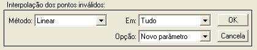
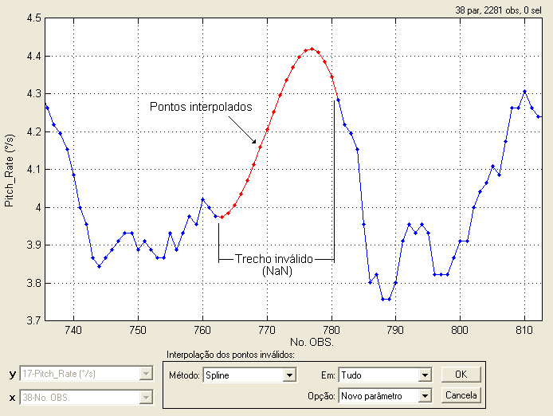

| Menu Funções |
|
Interpolar
Pontos Inválidos
Essa função
permite interpolar os pontos
inválidos de um parâmetro. É uma função útil
para revalidar pontos inválidos (“NaN”).
Clique no menu “Funções
► Filtragem e
reamostragem ... ► Interpolar pontos inválidos".
A Caixa de
Diálogo solicitará que o usuário indique os
parâmetros para interpolação:

● No campo
“Método”, indique o método de interpolação
desejado. Os métodos disponíveis são:
|
Opção |
Descrição |
|
Linear |
Os pontos inválidos serão interpolados linearmente entre os pontos válidos adjacentes. |
|
Vizinho |
Aos pontos inválidos será atribuído o valor dos pontos válidos mais próximos. |
|
Spline |
Os pontos inválidos serão interpolados pelo método de "splines". |
|
Cúbico |
Os pontos inválidos serão interpolados pelo método cúbico. |
|
Repetir |
Aos pontos inválidos será atribuído o valor do ponto válido imediatamente anterior. |
|
Especificar |
Aos pontos inválidos será atribuído um valor especificado pelo usuário. |
● Caso o método
“Especificar” seja selecionado, surgirá
um campo “Valor” para que o usuário indique o valor desejado.
|
Opção |
Descrição |
|
Tudo |
Todos os pontos
inválidos do parâmetro são interpolados. |
|
Intervalo |
Apenas os
pontos inválidos que estiverem
dentro do intervalo selecionado são
interpolados. Pontos fora dos limites do gráfico serão ignorados. |
● No campo
“Opção”, indique se deseja criar um novo
parâmetro ou substituir o atual com os dados modificados.
O resultado da
interpolação será mostrado temporariamente
conforme as seleções realizadas:

Ao clicar “OK”,
o usuário deverá fornecer o nome do novo
parâmetro ou confirmar a substituição do parâmetro original, dependendo
da
seleção do campo “Opção”.


No primeiro
caso, após definir o nome e pressionar “OK”, o novo
parâmetro com os pontos interpolados será acrescentado à penúltima
posição das
matrizes de trabalho (antes de “No.OBS.”).
No segundo caso, ao clicar “Sim” o parâmetro será atualizado.
| Nota: Parâmetros
com escala cíclica, como ângulos de Euler,
podem ser incorretamente interpolados entre observações que apresentam
descontinuidade (por exemplo, proa acima de 360° volta para o início da
escala). Para evitar esse efeito, os parâmetros devem ser alterados
para escala contínua (função “Alterar
intervalo circular”)
antes da interpolação e então retornados para a escala
original. |
| |
Interpolar
pontos selecionados |
Gerar mlissegundos
|
|